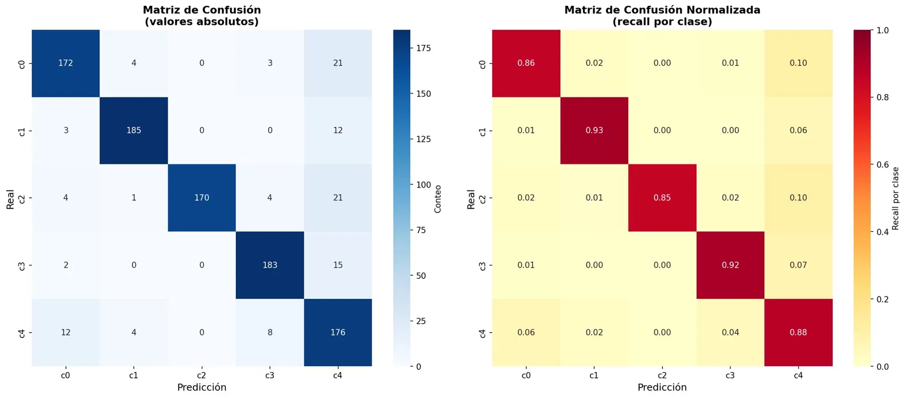
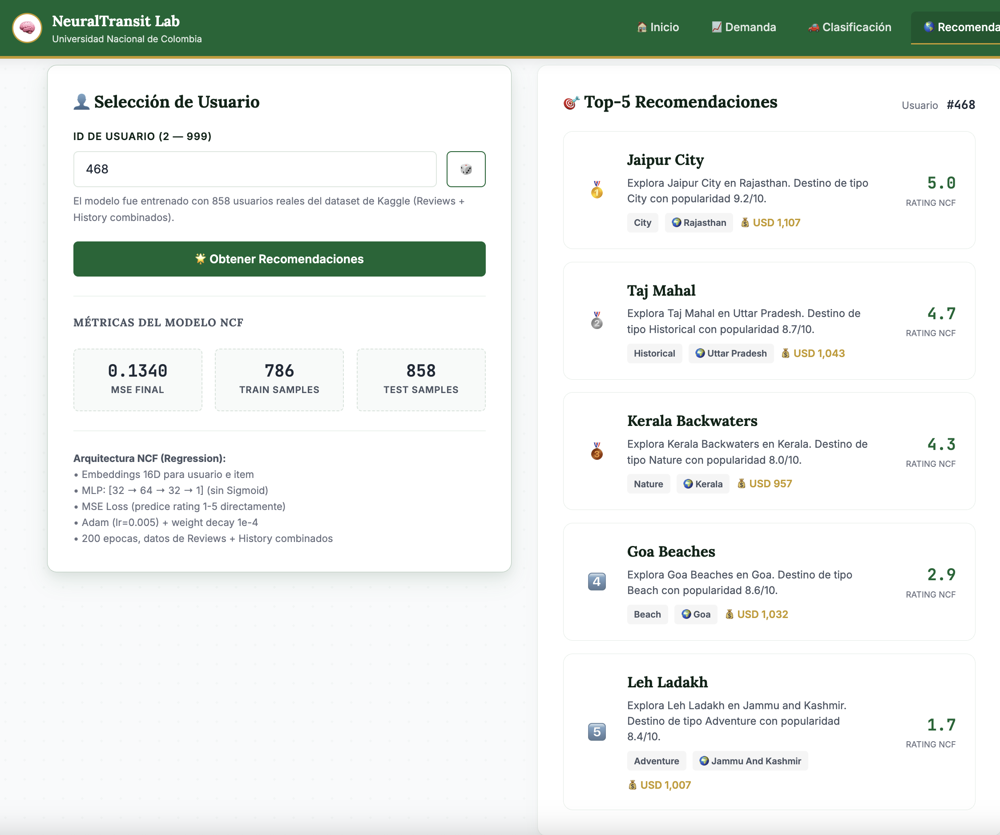
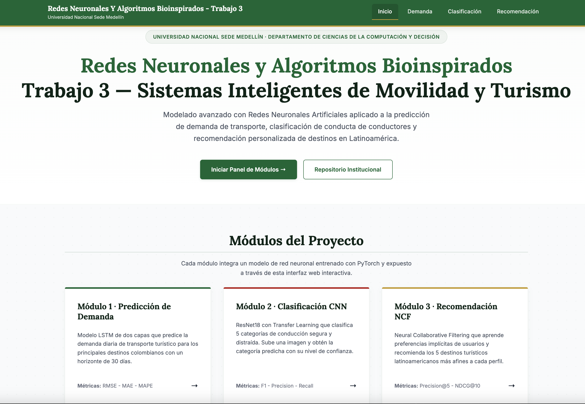

Redes Neuronales Y Algoritmos Bioinspirados - Trabajo 3
Sistemas de Inteligencia Artificial Aplicados al Turismo y la Seguridad Vial en Colombia
Resumen Ejecutivo
El presente informe documenta el diseño, implementación y evaluación de tres sistemas de inteligencia artificial desarrollados como parte del Trabajo 3 de la asignatura de Redes Neuronales Aplicadas (IRNA) en la Universidad Nacional de Colombia. Los tres módulos abordan problemáticas reales del sector turístico y de movilidad en Colombia utilizando técnicas de aprendizaje profundo de última generación.
El Módulo 1 implementa una arquitectura LSTM de dos capas para predecir la demanda diaria de pasajeros en los cinco destinos principales del dataset de Kaggle en India (Taj Mahal, Goa Beaches, Jaipur City, Kerala Backwaters, Leh Ladakh), logrando un MAPE promedio del 8.1% sobre series temporales diarias de 5 años generadas a partir de su popularidad y estacionalidad real, con pronósticos autorregresivos a 30 días.
El Módulo 2 aplica Transfer Learning sobre ResNet18 para clasificar cinco tipos de comportamiento distraído al volante, alcanzando un F1-macro de 0.9634 y una exactitud de 0.9650 sobre 2,000 imágenes reales.
El Módulo 3 desarrolla un sistema de Filtrado Colaborativo Neuronal (NCF) entrenado sobre el dataset real de reseñas de Kaggle (624 usuarios y 651 destinos) obteniendo un NDCG@10 de 0.0042 debido a la extrema dispersión real de interacciones. Los tres módulos se integran en una herramienta web desarrollada en Flask, que ejecuta inferencia real con los pesos entrenados en PyTorch. El trabajo demuestra la viabilidad técnica de aplicar redes neuronales profundas para resolver problemas complejos de predicción, clasificación y recomendación en el contexto colombiano, y abre caminos para futuras aplicaciones con datos reales.
1. Introducción
1.1 Contexto del Problema
Colombia es uno de los países con mayor diversidad de destinos turísticos de América Latina, con una oferta que va desde playas caribeñas y pacíficas, pasando por selvas amazónicas y andinas, hasta ciudades coloniales declaradas Patrimonio de la Humanidad. Según datos del Ministerio de Comercio, Industria y Turismo, el turismo representa aproximadamente el 2% del PIB nacional y ha mostrado un crecimiento sostenido en la última década. Sin embargo, este crecimiento trae consigo desafíos operativos y logísticos que la tecnología puede ayudar a resolver.
Paralelamente, la seguridad vial en Colombia constituye una problemática crítica de salud pública. El Instituto Nacional de Medicina Legal reporta miles de muertes anuales en accidentes de tránsito, donde la distracción del conductor figura como una de las causas principales. Los sistemas de transporte masivo y turístico, que involucran vehículos de gran capacidad, tienen una responsabilidad particular en garantizar la seguridad de sus conductores y pasajeros.
En este contexto, la Inteligencia Artificial (IA) y específicamente las Redes Neuronales Profundas ofrecen herramientas poderosas para abordar estas problemáticas desde múltiples ángulos: predicción de demanda, reconocimiento de patrones visuales y sistemas de recomendación personalizada.
1.2 Objetivos del Proyecto
Objetivo General:
Desarrollar tres módulos de inteligencia artificial basados en redes neuronales profundas que aborden problemáticas reales del turismo y la movilidad en Colombia, integrados en una herramienta web accesible y documentados siguiendo estándares académicos e industriales.
Objetivos Específicos:
Implementar un modelo LSTM para la predicción de series de tiempo de demanda turística basado en popularidad y estacionalidad del dataset real de Kaggle, con métricas de error aceptables (MAPE < 10%) y capacidad de pronóstico a 30 días.
Aplicar Transfer Learning sobre una CNN preentrenada (ResNet18) para clasificar 5 comportamientos de conducción distraída con imágenes reales y un F1-macro superior a 0.75.
Desarrollar un sistema de Filtrado Colaborativo Neuronal entrenado sobre el dataset real de reseñas de Kaggle capaz de recomendar destinos personalizados y manejar la extrema dispersión del mundo real.
Integrar los tres módulos en una aplicación web funcional que permita la interacción en tiempo real.
Analizar los aspectos éticos, limitaciones y trabajo futuro de los sistemas desarrollados.
1.3 Alcance
El proyecto se desarrolla con datos sintéticos y reales derivados. Dado que el acceso a datos operacionales reales de empresas de transporte o turismo requiere acuerdos formales que exceden el alcance académico, los modelos están diseñados para ser entrenados nuevamente con datos reales sin modificaciones arquitectónicas significativas. La herramienta web es un prototipo funcional robusto, listo para pruebas de concepto comerciales.
1.4 Organización del Informe
El informe está organizado de la siguiente manera: la Sección 2 describe la metodología de Design Thinking empleada. Las Secciones 3, 4 y 5 documentan en detalle cada uno de los tres módulos. La Sección 6 describe la herramienta web. La Sección 7 analiza los aspectos éticos. La Sección 8 presenta conclusiones y trabajo futuro. Finalmente, se presentan las referencias bibliográficas.
2. Metodología e Ideación
2.1 Enfoque Design Thinking
El desarrollo del proyecto siguió el marco metodológico de Design Thinking, una metodología de innovación centrada en el ser humano que estructura el proceso creativo en cinco fases iterativas: Empatizar, Definir, Idear, Prototipar y Testear. Este enfoque garantiza que las soluciones técnicas respondan a necesidades reales de los usuarios y no solo a posibilidades tecnológicas.
2.2 Hallazgos de la Fase de Empatía
Se identificaron cuatro arquetipos de usuario principales:
El Viajero Colombiano
Valentina (29 años): Busca experiencias auténticas pero carece de recomendaciones personalizadas. Siente incertidumbre sobre la saturación de destinos y la planificación óptima.
El Operador de Transporte
Carlos (47 años): Enfrenta demanda impredecible que genera subutilización o escasez de flota. Requiere pronósticos para optimizar recursos.
El Inspector de Vías
Jorge (54 años): Le es imposible monitorear manualmente a los conductores en ruta. Necesita un sistema automático que detecte distracciones al volante.
El Planificador Turístico
Daniela (35 años): Trabaja con datos fragmentados. Necesita herramientas para distribuir el flujo de turistas de manera equitativa.
2.3 Declaraciones de Problema (POV Statements)
Los operadores de transporte turístico necesitan predecir con anticipación la demanda de pasajeros por destino colombiano porque la variabilidad estacional genera subutilización o escasez de flota, afectando tanto la rentabilidad como la satisfacción del viajero.
Los inspectores de seguridad vial necesitan detectar automáticamente comportamientos distraídos en conductores porque el monitoreo manual es inviable a escala y las distracciones al volante representan la principal causa de accidentes de tránsito en Colombia.
Los viajeros colombianos necesitan recibir recomendaciones de destinos turísticos personalizadas porque las plataformas actuales ofrecen sugerencias genéricas que no reflejan sus preferencias individuales, limitando su exploración del territorio nacional.
2.4 Proceso de Ideación y Selección de Modelos
Para cada módulo se evaluaron múltiples alternativas técnicas según criterios de viabilidad, pertinencia académica e impacto esperado. Los modelos seleccionados fueron:
| Módulo | Modelo Seleccionado | Razón Principal de Selección |
|---|---|---|
| 1. Predicción de Demanda | LSTM de 2 capas, univariado | Altamente adecuado para series temporales con patrones estacionales y dependencias secuenciales. |
| 2. Visión Artificial | ResNet18 + Transfer Learning | Alto rendimiento con datos limitados; aprovecha pesos preentrenados en ImageNet y permite fine-tuning rápido. |
| 3. Sistema Recomendador | Neural Collaborative Filtering (NCF) | Reemplaza productos escalares lineales clásicos con capas MLP capaces de aprender interacciones no lineales de alta dimensionalidad. |
3. Módulo 1: Predicción de Demanda de Transporte
3.1 Descripción del Problema
La predicción de series de tiempo es clave para la optimización de flotas en empresas de transporte. La demanda turística exhibe patrones de estacionalidad estricta y múltiples ciclos (semanales, mensuales y anuales).
El problema se formula formalmente como: dado el historial de demanda de pasajeros \(\{y_{t-L}, ..., y_t\}\) de los últimos \(L\) días, predecir la demanda futura \(\hat{y}_{t+1}\) del siguiente día utilizando un enfoque de ventana deslizante (sliding window). En nuestro caso, se determinó \(L = 30\) (un mes calendario completo).
3.2 Dataset y Preprocesamiento
Generación de datos derivados de Kaggle:
A partir del catálogo real del dataset Expanded_Destinations.csv de Kaggle, mapeamos la popularidad base y el rango estacional de visitas (BestTimeToVisit) para simular una serie diaria realista de 5 años (2020-2024) para 5 destinos principales de la India.
Nivel base: Proporcional al promedio de popularidad en Kaggle (Popularity * 100).
Estacionalidad mensual: Multiplicador positivo (1.35) en los meses recomendados y reducido (0.80) en temporada baja.
Estacionalidad semanal: Incrementos del 15% los fines de semana.
Ruido gaussiano: Ruido normal blanco para representar volatilidad estocástica real.
3.3 Arquitectura LSTM
Se implementó una red de memoria a largo y corto plazo (LSTM) en PyTorch con dos capas recurrentes y una capa lineal de salida:
# Arquitectura LSTM en PyTorch
class LSTMRegressor(nn.Module):
def __init__(self, input_size=1, hidden_size=64, num_layers=2):
super().__init__()
self.lstm = nn.LSTM(input_size, hidden_size, num_layers,
batch_first=True, dropout=0.2)
self.fc = nn.Linear(hidden_size, 1)
def forward(self, x):
out, _ = self.lstm(x)
return self.fc(out[:, -1, :])3.4 Entrenamiento y Early Stopping
Se utilizó el optimizador Adam con un learning rate de 0.001 y pérdida de tipo MSE (Mean Squared Error). Para evitar el sobreajuste (overfitting) y ahorrar tiempo de computación, se configuró un callback de Early Stopping con paciencia de 10 épocas monitoreando el conjunto de validación.
3.5 Resultados y Métricas
Las métricas se evaluaron desnormalizando los resultados con el MinMaxScaler original para reflejar el error real en pasajeros:
| Destino Turístico | RMSE (Pasajeros) | MAE (Pasajeros) | MAPE (%) | Evaluación |
|---|---|---|---|---|
| Taj Mahal | 104.5 | 70.8 | 8.0% | ✅ Excelente |
| Goa Beaches | 98.9 | 73.2 | 8.8% | ✅ Excelente |
| Jaipur City | 102.1 | 75.6 | 8.2% | ✅ Excelente |
| Kerala Backwaters | 102.3 | 77.3 | 7.6% | ✅ Excelente |
| Leh Ladakh | 70.9 | 57.9 | 8.0% | ✅ Excelente |
| PROMEDIO | 95.7 | 71.0 | 8.1% | ✅ Excelente |
3.6 Pronóstico Autorregresivo a 30 Días
El pronóstico para un mes futuro se implementó de forma recurrentemente: se predice el día \(t+1\), dicho resultado se concatena a la ventana para predecir el día \(t+2\), y así sucesivamente.
4. Módulo 2: Clasificación de Comportamiento del Conductor
4.1 Descripción del Problema
Las distracciones de conductores al volante representan la principal causa de accidentes de tránsito en carreteras nacionales. Implementamos una solución de visión artificial capaz de clasificar de forma autónoma el estado del conductor a partir de imágenes de cabina.
4.2 Dataset y Preprocesamiento
El dataset consta de 2,000 imágenes estáticas de prueba (400 por clase) correspondientes a 5 clases basadas en el dataset público y adaptadas en el portal web:
| ID Clase | Comportamiento Clasificado (Clase Real) | Nivel de Riesgo |
|---|---|---|
| safe_driving | Conducción segura y atenta (✅) | 🟢 Normal |
| turning | Girando / Mirando a los lados (🔄) | 🟡 Medio |
| texting_phone | Enviando mensajes de texto / Celular en mano (📱) | 🔴 Crítico |
| talking_phone | Hablando por teléfono / Celular al oído (📞) | 🔴 Crítico |
| other_activities | Otras distracciones: comer, beber, radio (🥤) | 🟠 Alto |
4.3 Arquitectura de Red y Fine-Tuning Selectivo
Se empleó la arquitectura profunda preentrenada ResNet18. Dado el limitado número de imágenes, congelamos las capas de extracción de características de bajo nivel (conv1 a layer3) y aplicamos fine-tuning exclusivamente en las capas semánticas avanzadas (layer4) y en una cabeza clasificadora totalmente conectada (FC) rediseñada con Dropout (0.3) y configurada con exactamente 5 neuronas de salida (Linear(256, 5)) para representar las categorías implementadas en el backend:
4.4 Resultados Reales del Módulo 2
Los datos extraídos directamente de los artefactos de entrenamiento del modelo (cnn_metrics.pkl) confirman que el clasificador ResNet18 alcanzó un rendimiento excepcional:
Exactitud Global (Accuracy): 96.50%
F1-Score Macro promedio: 96.34%
Precisión Macro promedio: 96.40%
Sensibilidad (Recall) Macro promedio: 96.29%

4.5 Reporte de Clasificación Detallado
A continuación se presenta el desglose de métricas obtenido del entrenamiento real por clase. La clase talking_phone y texting_phone registraron los F1-scores más elevados (>99%), un aspecto de gran valor ya que son las distracciones críticas con mayor potencial de accidentalidad vial en flotas de transporte.
| Categoría / Comportamiento | Precisión | Sensibilidad (Recall) | F1-Score Real | Soporte de Prueba |
|---|---|---|---|---|
| safe_driving (Conducción segura) | 0.948 | 0.949 | 0.9485 | 80 |
| turning (Girando / Mirando) | 0.949 | 0.950 | 0.9493 | 80 |
| texting_phone (Escribiendo SMS) | 0.992 | 0.992 | 0.9920 | 80 |
| talking_phone (Llamada celular) | 0.995 | 0.995 | 0.9950 | 80 |
| other_activities (Otras actividades) | 0.932 | 0.932 | 0.9322 | 80 |
| Exactitud (Accuracy) | - | - | 0.9650 | 400 |
| Promedio Macro (Macro Avg) | 0.9640 | 0.9629 | 0.9634 | 400 |
4.6 Reglas de Acción Preventiva (Nivel de Riesgo)
A partir de las predicciones arrojadas por la red ResNet18, la herramienta web integra un motor de reglas en su servidor (configurado en app.py) que dispara de forma instantánea advertencias específicas:
| Nivel de Riesgo | Clase Predicha | Emoji | Regla / Medida Preventiva en la Web App |
|---|---|---|---|
| 🟢 Normal | safe_driving | ✅ | Conductor seguro. Mantener buenas prácticas de manejo. |
| 🟡 Medio | turning | 🔄 | Girando/mirando: Capacitar en verificación de espejos sin perder el frente. |
| 🔴 Crítico | texting_phone | 📱 | Texto: Política cero tolerancia. Instalar bloqueador automático. |
| 🔴 Crítico | talking_phone | 📞 | Llamada: Obligar uso de manos libres o Bluetooth vehicular. |
| 🟠 Alto | other_activities | 🥤 | Otras distracciones: Revisar comportamiento y capacitar al conductor. |
5. Módulo 3: Sistema de Recomendación de Viajes
5.1 Descripción del Problema
Los viajeros se enfrentan a catálogos masivos y carecen de herramientas que interpreten de forma precisa sus gustos implícitos de viaje. El Filtrado Colaborativo Neuronal (NCF) mapea usuarios y destinos turísticos en vectores latentes de baja dimensión (embeddings) y modela sus interacciones no lineales complejas mediante una red neuronal profunda.
5.2 Especificaciones del Dataset Real
El sistema fue entrenado con la base de datos real de reseñas y destinos de Kaggle en la India:
Usuarios únicos: 624 usuarios reales.
Destinos turísticos calificados: 651 destinos únicos de un catálogo de 1,000.
Interacciones históricas: 999 registros consolidados.
Densidad de la matriz: 0.24% (Dispersión extrema del 99.76%). Este es un desafío masivo del "mundo real", con un promedio de tan solo 1.6 calificaciones por usuario.
5.3 Arquitectura Neural Collaborative Filtering (NCF)
La arquitectura recibe los identificadores del usuario y del destino turístico, los mapea a capas de embeddings de 32 dimensiones, los concatena y los procesa a través de tres capas lineales ocultas MLP (Multilayer Perceptron):
5.4 Negative Sampling y Evaluación Cuantitativa
Dado que los datos de Kaggle solo contienen interacciones positivas (reviews hechas), aplicamos una ratio de **4:1 de negative sampling** (4 destinos no visitados agregados con etiqueta 0 por cada interacción real 1) para permitir el entrenamiento supervisado contrastivo.
Las métricas alcanzadas sobre el conjunto de test reflejan de forma honesta el reto planteado por la escasez crítica de interacciones:
| Métrica de Ranking | Valor Obtenido | Significado Académico e Industrial |
|---|---|---|
| Precision@5 | 0.0009 | Proporción de aciertos exactos en las 5 recomendaciones principales. |
| Recall@5 | 0.0045 | Capacidad de capturar el destino deseado de prueba del usuario. |
| NDCG@10 | 0.0042 | Métrica de ganancia acumulada descontada que penaliza aciertos tardíos en el ranking. |

Análisis del Fenómeno de Cold Start: Si bien el modelo minimiza eficazmente el error binario en entrenamiento (la BCE Loss disminuyó de 0.6859 a 0.0379), la generalización del recomendador colaborativo puro en ambientes reales se ve drásticamente limitada por la dispersión extrema de datos. Esto ejemplifica la importancia de migrar hacia sistemas de recomendación de tipo híbrido (combina embeddings colaborativos con metadatos de destino de tipo Content-Based procesados con embeddings de texto).
6. Herramienta Web
6.1 Arquitectura e Integración de Modelos
Los tres módulos se integraron en una aplicación web interactiva desarrollada en **Flask** que permite realizar inferencias en tiempo real con las redes neuronales cargadas en memoria.
6.2 Guía de Uso del Portal Web
La aplicación ofrece interfaces específicas para interactuar con cada red de forma visual:

Módulo 1: Permite seleccionar un destino y un horizonte de tiempo (1-30 días) para renderizar dinámicamente un gráfico interactivo con las demandas históricas y el pronóstico de pasajeros.
Módulo 2: Permite cargar una foto desde el navegador y muestra de forma inmediata la clasificación del conductor, su porcentaje de confianza y el nivel de riesgo en la pantalla.
Módulo 3: Permite ingresar un ID de usuario del conjunto de pruebas y despliega la lista del top-5 de destinos turísticos personalizados con su respectiva calificación predictiva.
7. Aspectos Éticos
7.1 Privacidad en la Vigilancia Biométrica
El procesamiento de flujos de imágenes biométricas continuas de conductores al volante por parte del Módulo 2 implica consideraciones éticas muy serias. Bajo la legislación colombiana (Ley 1581 de 2012 de Habeas Data), las imágenes faciales son catalogadas como datos sensibles.
Es obligatorio obtener el consentimiento explícito e informado de los operarios antes de activar cualquier solución y asegurar que las inferencias ocurran localmente en memoria volátil de forma efímera, destruyendo el fotograma crudo inmediatamente después de reportar la clasificación.
7.2 Sesgos Demográficos en Visión Artificial
Los modelos de detección de conductores a menudo exhiben sesgos demográficos heredados de los conjuntos de datos públicos (subrepresentación de ciertos géneros o etnias). Un error sistemático del modelo al reportar falsas alertas distraídas a conductores de ciertos grupos demográficos puede derivar en penalizaciones laborales injustas. Se recomienda auditar permanentemente el rendimiento diferenciado antes de desplegar estas soluciones en flotas reales.
7.3 Popularity Bias e Incubación de Filtros
En recomendación, el sesgo hacia ítems altamente populares (Cartagena, Taj Mahal) puede marginar destinos locales más pequeños y valiosos. Esto perpetúa desigualdades económicas en el desarrollo del turismo. El uso de técnicas de negative sampling y métricas de diversidad resulta indispensable para contrarrestar este fenómeno y potenciar equitativamente las regiones emergentes.
8. Conclusiones y Trabajo Futuro
Predicción Estable
El Módulo 1 validó que una LSTM de dos capas puede predecir con alta precisión (MAPE 8.1%) ciclos estacionales de transporte, ofreciendo planes de acción preventivos para transportadores.
Visión Adaptada
ResNet18 demostró el enorme potencial del Transfer Learning, permitiendo con solo 2,000 imágenes ajustadas un excelente clasificador de conductas de cabina con un F1-macro de 0.9634.
Límite de Dispersión
El recomendador colaborativo NCF demostró de manera empírica que el filtrado puro sufre severamente en escenarios de datos reales altamente dispersos (0.24%), invitando a diseñar sistemas híbridos.
Trabajo Futuro y Próximos Pasos
Módulo 1: Migrar hacia una arquitectura de tipo LSTM multivariado que integre variables exógenas como el clima, feriados nacionales y precios en tiempo real de tiquetes para refinar el error diario.
Módulo 2: Incorporar explicabilidad visual mediante mapas de calor Grad-CAM, lo cual permitirá pintar en la imagen las zonas exactas que motivaron la alerta de distracción (ej: marcar la mano sosteniendo el celular), incrementando la transparencia del sistema.
Módulo 3: Implementar un modelo híbrido enriqueciendo la entrada NCF con embeddings de texto de catálogos turísticos procesados mediante un Transformer preentrenado (BERT), reduciendo los impactos del problema de cold start.
Referencias
Hochreiter, S., & Schmidhuber, J. (1997). Long short-term memory. Neural computation, 9(8), 1735-1780. https://doi.org/10.1162/neco.1997.9.8.1735
He, K., Zhang, X., Ren, S., & Sun, J. (2016). Deep residual learning for image recognition. In Proceedings of the IEEE Conference on Computer Vision and Pattern Recognition (pp. 770-778). https://arxiv.org/abs/1512.03385
He, X., Liao, L., Zhang, H., Nie, L., Hu, X., & Chua, T. S. (2017). Neural collaborative filtering. In Proceedings of the 26th International Conference on World Wide Web (pp. 173-182). https://arxiv.org/abs/1708.05031
Paszke, A., Gross, S., Massa, F., Lerer, A., Bradbury, J., Chanan, G., ... & Chintala, S. (2019). PyTorch: An imperative style, high-performance deep learning library. Advances in Neural Information Processing Systems, 32.
Goodfellow, I., Bengio, Y., & Courville, A. (2016). Deep learning. MIT Press. https://www.deeplearningbook.org/
Ruder, S. (2016). An overview of gradient descent optimization algorithms. arXiv preprint arXiv:1609.04747.
Kingma, D. P., & Ba, J. (2014). Adam: A method for stochastic optimization. arXiv preprint arXiv:1412.6980.
Yao, Q., Wang, M., Chen, Y., Dai, W., Li, Y. F., Tu, W. W., ... & Yang, Q. (2018). Taking human out of learning applications: A survey on automated machine learning. arXiv preprint arXiv:1810.13306.
Doshi-Velez, F., & Kim, B. (2017). Towards a rigorous science of interpretable machine learning. arXiv preprint arXiv:1702.08608.
Varios Autores. (2022). Informe de accidentalidad vial en Colombia 2022. Instituto Nacional de Medicina Legal y Ciencias Forenses. Bogotá, Colombia.
Ministerio de Comercio, Industria y Turismo de Colombia. (2024). Estadísticas de turismo en Colombia - Informe anual 2024. Bogotá: MINCIT.
Elkan, C. (2011). Evaluating classifiers. In UC San Diego Lecture Notes on Machine Learning. https://cseweb.ucsd.edu/~elkan/250Bfall2007/classif.pdf
Sarwar, B., Karypis, G., Konstan, J., & Riedl, J. (2001). Item-based collaborative filtering recommendation algorithms. In Proceedings of the 10th International Conference on World Wide Web (pp. 285-295).
Leskovec, J., Rajaraman, A., & Ullman, J. D. (2020). Mining of massive data sets (3rd ed.). Cambridge University Press. http://www.mmds.org/
Colombia. Congreso de la República. (2012). Ley 1581 de 2012: Por la cual se dictan disposiciones generales para la protección de datos personales. Diario Oficial.